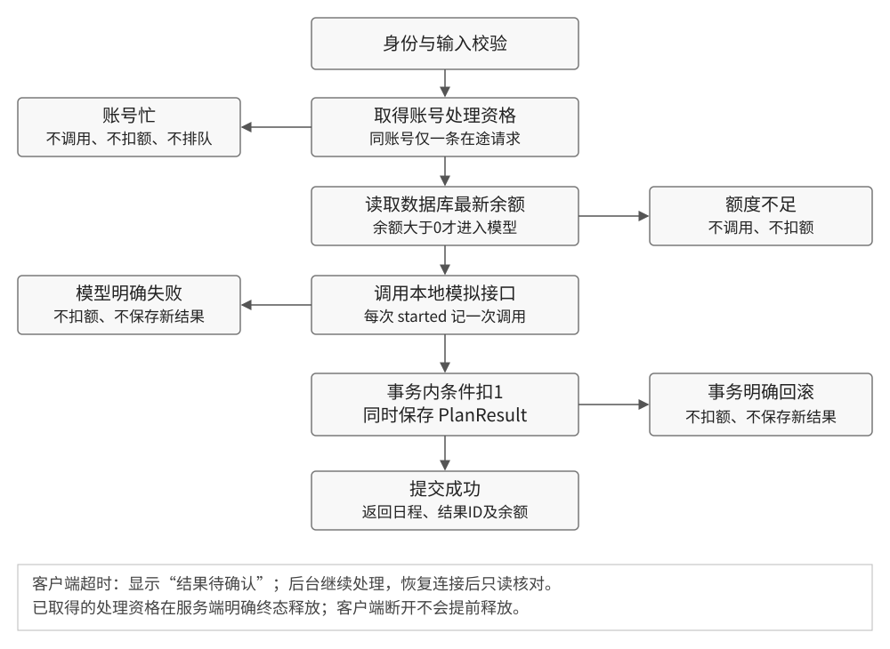

正文：01_PRD.md
日程生成额度处理方案
颜文慧 · 产品方向 · 2026-10-25 · v1.0
当前程序会在检查额度前调用模型，同账号并发也能透支。本轮采用“同账号一次只处理一条生成请求”：先取得处理资格、读取最新余额，再调用模型；成功后将结果保存与扣额一并提交。产品方案与基线验证已完成，业务改动待开发。
1. 问题依据
| 观察 | 影响 | 处理决定 |
|---|
| AC06：余额0，返回402，但仍有1次模型调用 | 请求被拒绝，却已使用提供方调用资源 | 额度校验前移到模型调用之前 |
| CC01–03：三轮并发均由1变为-1，每轮保存2份结果 | 超出账号可用权益；余额难以解释 | 服务端按账号控制在途请求 |
| AC03：失败不扣额，但显示英文500，旧日程仍在 | 本次是否成功、是否扣额不清楚 | 明确本次状态，标识上次结果 |
| AC07：刷新后结果不显示，数据库仍有3条 | 用户可能通过再次生成寻找已付出的结果 | 增加只读的“最近已保存日程”入口 |
数据及原图见验收记录。以上为受控测试观察，未开展用户访谈；可能的用户影响属于产品判断。
2. 本轮范围
围绕题目五条规则，完成生成准入、同账号并发控制、扣额与保存、结果反馈。沿用新账号3额度；增加和编辑待办不消耗额度。计费单位是一次成功生成，与待办条数、步骤数和工时无关。
“最近已保存日程”只读取当前账号最新一条结果，不扩展为完整历史管理。它用于刷新和网络异常后的核对，随核心反馈一起交付。
不包含支付、订阅、充值、跨账号防刷、Token计价、跨请求结果复用或服务崩溃自动补偿。按当前单服务、单数据库运行；进程内互斥另要求服务只有一个执行进程，研发接手时须确认，不能把“单服务”直接当作“单进程”。
3. 业务规则
| 编号 | 规则 | 验收依据 |
|---|
| R01 初始权益 | 新账号额度为3；待办编辑不扣额度 | AC01 |
| R02 成功消费 | 有效日程保存与扣1共同提交成功，才算一次业务成功；客户端未收到回执不改变已提交结果 | AC02、AC05、AT04 |
| R03 调用前准入 | 取得处理资格后读取数据库余额；余额≤0直接拒绝，不调用模型、不新建结果 | AC06、AC08、AT05 |
| R04 明确失败 | 模型明确失败：不扣额度、不保存新结果，释放处理资格，保留用户输入 | AC03、AC04、AT02 |
| R05 同账号并发 | 同账号一条请求在处理时，第二条立即返回忙；不排队、不自动重试、不进入模型 | CC01–03、AT01 |
| R06 原子结算 | 同一事务内条件扣额并创建结果；扣额条件不成立或写入失败时整体回滚 | AC02、CC01–03、AT03 |
| R07 再次生成 | 上次结束后用户主动提交是新请求，成功仍扣1；不承诺免费复用 | AC04、AT06 |
| R08 结果核对 | 客户端超时不等于失败；显示待确认，恢复连接后刷新余额及最近已保存日程，不自动发起新生成 | AC07、AT04、AT09 |
| R09 账号归属 | 准入、任务查询、结果读取均使用服务端登录身份；不同账号不共享同一把全局锁 | AT07、AT08 |
mock-ai.succeeded只说明模拟接口返回成功；PlanResult新增且扣额事务提交，才是业务成功。页面收到并展示结果是第三件事。AC06出现了“模型成功、业务被拒绝”，不能混用这三种口径。
4. 关键取舍
并发请求直接返回忙。 题目只要求不透支，并未指定排队。本轮不排队，避免用户切换任务后，旧请求在后台延后执行并扣额。谁先取得处理资格不作承诺。
服务端控制不能由按钮禁用代替。 当前页面防重复点击保留；跨标签和直接请求仍以服务端为准。只提前读一次余额也不够，两条请求仍可能同时读到1。
事务保护结算，账号资格保护调用。 原版已有事务，但使用旧余额判断并无条件递减。目标实现同时约束“谁能开始调用”和“什么结果可以提交”。
最近结果查询只做核对。 当前PlanResult没有请求ID，最近一条不能证明属于某次超时请求。页面展示生成时间并说明核对边界；用户仍无法确认时，可以等待后再刷新，不自动重试。完整请求状态查询、历史分页暂不引入。
5. 本轮交付标准
1. 正常成功：额度减1、结果增1；明确失败：两者都不变。
2. 零额度：模型调用数为0。余额1的重叠请求：最多一条调用、最多一份结果，最终余额0。
3. 同账号忙、额度不足、明确失败、结果待确认分别有可理解的反馈和可执行的下一步。
4. 刷新可以读取最近已保存日程；前端旧余额不能影响服务端准入。
指标只用于本轮验收。基线的0/2零额拦截、3/3轮透支及9/9普通成功一致性见数据口径；不据此估计线上概率、真实Token或货币成本。
详细行为见流程与界面，交接顺序见开发拆解。日程质量、任务完成状态如何参与排程、工时舍入留待后续，不阻塞本轮额度改进。
正文：02_FLOW_AND_STATES.md
生成流程与界面说明
颜文慧 · 产品方向 · 2026-10-25 · v1.0
将额度检查放在模型前，并在同账号范围内限制在途请求。页面同时说明本次结果、额度变化和下一步。以下为目标设计；原版截图用于说明问题，不代表设计已经实现。
1. 服务端主流程

已取得的处理资格覆盖最新余额读取、模型调用和事务提交全过程。账号忙不排队，余额不足不调用；提交成功后返回结果及最新余额。客户端关闭、超时或断网不会提前释放后台资格。
准入读取异常、模型明确失败、事务明确回滚等路径均须释放已取得的资格。若服务端自身无法确认事务提交结果，不承诺未扣除；记录异常并交人工排查。本轮不设计崩溃后的自动补偿。
2. 余额1的双标签请求
| 时点 | 账号内先取得资格的请求 | 另一请求 | 约束 |
|---|
| 开始 | 读最新余额1，调用模型 | 同账号正在处理时到达 | 另一请求返回409忙，不调用 |
| 完成 | 保存1份结果、扣1、释放资格 | 等待或主动刷新 | 最终余额0，结果增量1 |
| 再次提交 | 已结束 | 用户主动再次提交 | 读余额0后返回402，不调用 |
如果第二条到达服务端时第一条已结束，应按最新余额处理，不能强制要求409。客户端请求区间重叠只是并发证据之一；需结合模型事件先后顺序确认是否同时进入调用。
3. 页面状态与操作
| 状态 | 页面信息 | 用户操作与系统行为 |
|---|
| 空任务 | 请先添加待办事项 | 添加可用，生成禁用 |
| 可生成 | 剩余额度X；每成功生成一次消耗1额度，明确失败不扣除 | 点击生成进入处理中 |
| 生成中 | 正在生成，请稍候 | 当前页生成禁用；不提前扣减显示余额 |
| 成功 | 日程已生成。本次消耗1额度，剩余X | 显示本次日程；有额度时可主动再次生成 |
| 额度不足 | 额度已用完，当前无法生成新日程 | 禁用生成；仍可编辑任务、查看最近已保存日程；无充值入口 |
| 明确模型失败 | 本次生成失败，未扣除额度。请稍后重试 | 保留输入；可主动重试；旧结果标为上次成功日程 |
| 账号忙 | 该账号有一份日程正在生成，请等待完成后再试 | 不排队、不自动重试；回到页面时刷新余额 |
| 结果待确认 | 暂未确认生成结果，请恢复连接后刷新核对 | “刷新并核对”只查询余额与最近结果；不调用生成接口，不承诺未扣额 |
| 保存明确回滚 | 日程保存失败，本次未扣除额度，请重试 | 保留输入；用户主动重试 |
结果回执放在生成按钮下方，页面保留可回看的状态文字，不能只依赖短暂提示框。只有明确失败或确认回滚才显示“未扣除额度”。
4. 页面布局与结果核对
任务规划实验室 剩余额度：2
每成功生成一次消耗1额度；明确失败不扣除
待办输入与列表 / 任务时长 / 总可用时长
[生成日程] 本次状态：生成失败，未扣除额度。 [重试]
上次成功的日程 · 生成时间
[最近已保存日程] [刷新并核对]
最近结果显示生成时间和内容，以PlanResult.createdAt降序取当前账号最新一条；同时间以ID作稳定次序。无结果时显示“暂无已保存日程”；读取失败时保留待确认状态，允许重新查询。查询不消耗额度。
余额与最近结果是分别读取的数据：若有其他标签页持续生成，暂时不一致时再次刷新，不能把二者当成某次请求的完整回执。有请求ID关联前，不使用“已找回本次结果”的文案。
5. 数据与回执约定
| 页面/行为 | 现有来源 | 本轮调整 |
|---|
| 余额 | User.credits | 成功后用回执更新；页面回焦、核对时重查；服务端不信任前端缓存 |
| 日程 | PlanResult.content，JSON字符串 | 标明本次或最近已保存；由服务端按当前用户查询 |
| 成功回执 | 当前只返回日程 | 拟增加planResultId、remainingCredits；保持原日程可解析 |
| 错误回执 | 当前402消息或通用500 | 拟用稳定业务码区分无额度、账号忙、模型失败、保存失败 |
回执字段和错误码为拟新增，由D01确认后回填；前端使用业务码，不解析英文堆栈判断是否扣额。
正文：03_DEVELOPMENT_PLAN.md
开发任务与交接
颜文慧 · 产品方向 · 2026-10-25 · v1.0
按“契约 → 准入和结算 → 页面反馈 → 回归”推进。只改按钮或移动余额判断不足以防止跨标签透支。下列任务均待开发，完成标准对应需求规则和验收案例。
1. 工作项
| 编号 / 责任 | 具体交付 | 依赖 | 完成标准与验收 |
|---|
| D01 产品、前后端 | 确定成功回执、200/401/402/409及5xx业务码；确认执行进程数 | 无 | planResultId/remainingCredits及错误语义确认；更新流程文档；各方按同一契约开发 |
| D02 后端 | operations.ts中在模型前取得账号资格、读最新余额；所有明确终态释放 | D01 | 同账号不能同时进入模型；零额0调用；客户端断开不提前释放。AC06/08、CC01–03、AT01/02/05 |
| D03 后端 | 事务内条件扣1并创建PlanResult；条件不满足或写入失败整体回滚 | D02 | 余额不为负；不会只扣不存或只存不扣；返回数据库新余额。AC02/05、CC01–03、AT03 |
| D04 后端 | 区分模型明确失败、保存失败和未知；返回稳定业务码 | D01、D02 | 明确失败不扣且可再次生成；不向页面暴露通用英文堆栈。AC03/04、AT02/03/04 |
| D05 前端 | DemoAppPage.tsx落实状态表、按钮限制、中文回执与旧结果标识 | D01，可先按契约开发 | 输入保留；成功刷新余额；零额、忙、失败、未知可区分；不自动重试。AC03/06/08、AT04/05 |
| D06 前后端 | 用getPlanResults提供当前账号最近结果；增加只读核对入口及回焦余额刷新 | D03、D05 | 刷新可查已有结果；无记录和查询失败有反馈；查询不调用模型、不扣额度。AC07、AT04/09 |
| D07 后端、测试 | 补充请求、调用和提交结果的关联日志 | D01、D03 | 记录请求ID、用户ID、调用ID、结果ID、业务终态；敏感凭据不入日志。支持全部用例归因 |
| D08 测试、开发 | 执行基线回归及补充用例，按新版本保存证据 | D02–D07 | 每例有前置、操作、预期、实际；所有本轮阻断项通过；未运行项不能计通过 |
D01–D08均为本轮P0工作。完整历史分页、跨请求结果复用、计费账本和多实例协调暂不做；最近结果核对属于核心反馈，不再单独延期。
2. 研发接手时要确认的三个点
处理资格的作用域。 单执行进程可使用按userId的进程内协调；取得资格必须是原子动作，早于异步读余额和模型调用。如果实际有多个worker，改用数据库协调并补充验证，不能照搬进程内方案。
条件扣额的失败分支。 事务内仅允许credits>0的当前用户扣额；更新0行时回滚结果创建。模型调用不放在长数据库事务里等待。网络失联不等于事务回滚，业务结果仍以持久化状态为准。
日志与现有字段的区别。 当前日志仅有event/callId；D07的requestId/userId/planResultId/outcome是新增日志上下文，不代表现有数据库字段。新增日志能关联单次操作；不因此承诺跨请求去重或完整请求状态查询。
3. 规则到任务的对应关系
| 规则 | 主要任务 | 验收入口 |
|---|
| R01、R07 初始权益与新请求 | D05、D08 | AC01、AC04、AT06 |
| R02、R06 成功与原子结算 | D03、D07、D08 | AC02、AC05、AT03/04 |
| R03 调用前准入 | D02、D05、D08 | AC06、AC08、AT05 |
| R04 明确失败 | D04、D05、D08 | AC03、AC04、AT02 |
| R05 同账号并发 | D02、D03、D08 | CC01–03、AT01 |
| R08 结果核对 | D05、D06、D08 | AC07、AT04/09 |
| R09 账号归属 | D02、D06、D08 | AT07、AT08 |
4. 完成与交接标准
研发交付改动、运行说明、接口契约和验证入口；测试按用例记录页面、HTTP、余额、结果数与调用日志。原始证据不覆盖，新结果按提交版本和运行时间另建目录。
所有核心规则及本轮补充用例通过后，才标记“实现验收完成”。若测试环境无法注入回滚或断网，明确记录阻塞条件和负责人，不以代码阅读代替实测。工时和上线时间待研发评估，本材料不作未经确认的排期承诺。
下一位接手者先读需求第3节，再确认D01；核对operations.ts、mockAi.ts、DemoAppPage.tsx和schema.prisma后按表推进。若后续改为技术方向提交，另遵循题目先提交SPEC的要求。
正文：04_ACCEPTANCE_AND_EVIDENCE.md
验收案例与基线验证
颜文慧 · 产品方向 · 2026-10-25 · v1.0
基线已复现零额度调用和同账号并发透支，正常成功、明确失败的扣额行为符合规则。按页面、HTTP、数据库和模型日志交叉验证；改进方案尚未实现，本文不包含修复后通过记录。
1. 环境与口径
基线114aeb28f6368e96c08a25627ac094b8d102fd1b；Wasp 0.25.0、PostgreSQL16、本地mock。2026-10-25 15:51:05–15:52:46（北京时间）使用可见Chrome测试；数据库截图随后补拍。4个新账号，18次真实按钮生成请求，无人工改余额、无业务代码改动。
记C为当前用户User.credits，P为按PlanResult.userId筛选的结果数，M为案例窗口内mock-ai.started数量；ΔP=P后-P前。普通成功应有C前-C后=ΔP=1；并发还必须满足C后≥0，按本方案M≤1。
入口：原始总记录、截图与日志索引、完整回放、复现说明。回放为49张逐步原图，不是连续视频。
2. 已运行案例
| 用例 / 操作 | 目标预期 | 基线实际 / 判定 |
|---|
| AC01 新注册，添加普通任务 | C=3；空任务禁用生成；编辑不扣额 | 注册及添加已验证，C仍3；其他编辑操作纳入回归 |
| AC02 C=3，生成普通日程 | 200；C3→2，ΔP1，M1 | 与预期一致，通过 |
AC03 C=2，添加含[fail]的任务后生成 | 明确失败；C不变，ΔP0；M1且failed1；说明未扣额 | 500；C2→2，ΔP0；数值通过。英文Error且旧结果未标识，反馈待改 |
| AC04 删除失败任务后生成 | 恢复成功；C2→1，ΔP1，M1 | 与预期一致，通过 |
| AC05 C=1，正常生成 | 最后1额度可用；C1→0，ΔP1，M1 | 与预期一致，通过 |
| AC06 C=0，普通任务再次生成 | 拦截；C不变，ΔP0，M0 | 402；C0→0、ΔP0，但M1且succeeded1；失败 |
| AC07 已保存3份结果，刷新页面 | 观察持久化与展示；改进后可核对最近结果 | C仍0、P仍3，页面日程消失；记录为体验缺口，新增入口待验 |
| AC08 C=0且有失败任务，生成 | 先按额度拦截，M0 | 500；C不变、ΔP0，但M1且failed1；失败 |
| CC01–03 每轮新账号自然消费到1，同账号两页同步生成 | 最多1调用、1份结果，最终C0；另一请求忙或按最新余额拒绝 | 每轮200+200、M2、ΔP2、C1→-1；三轮均失败 |
并发前置PRE1-1至PRE3-2共6次正常生成，每次C减1、P增1、M1；它们是前置消耗，不是6条独立需求通过。上述AC编号对应原始JSON；AC01见initialCheck/accounts，AC07见persistenceCheck。
并发是否真正发生
| 轮次 | 浏览器观测重叠 | 模型事件顺序 | 数据结果 |
|---|
| CC01 | 611ms | started、started、succeeded、succeeded | C1→-1；P2→4 |
| CC02 | 601ms | started、started、succeeded、succeeded | C1→-1；P2→4 |
| CC03 | 598ms | started、started、succeeded、succeeded | C1→-1；P2→4 |
每轮是同一账号、两个真实页面。两次started均早于首次succeeded，说明两次模型调用重叠。最终4条包含前置2条，本轮新增2条。CC01某页曾显示缓存余额0；刷新及数据库确认均为-1。
3. 关键证据
阅读版对这些位置加红框，原始PNG不变。批注仅帮助定位，余额和结果以原图、JSON及日志共同复核。
4. 汇总与归因边界
- 普通非并发成功9/9满足扣1、增1结果，含6次并发前置；零额正确拦截0/2；并发透支3/3轮。
- 18个生成请求对应18次started、16次succeeded、2次failed，新增结果15份。15个HTTP200包含违规并发成功，不能写成15次验收通过。
- 明确模型失败2次均未扣额，但AC08本不应调用。统计描述的是本轮样本，不是线上概率或真实成本。
日志无userId，结果表无callId。本轮按隔离时间窗归因，callId只连接同一次模型的开始与结局；其他用户若同时生成，须作废窗口重测。原始时间为UTC；浏览器与数据库时钟未校准，不跨来源计算延迟。requestBody:null表示未采集到请求体，不表示未传参数；截图显示总时长8小时。
5. 修复后必须补跑的案例
下表全部未运行，基础AC及CC也需在新版本重跑。忙拒绝、最近结果核对和日志关联是目标行为，当前没有通过记录。
| 用例 / 前置 | 操作 | 可观察预期 |
|---|
| AT01 C=3，同账号 | 首条模型在途时发第二条 | 第二条409忙且0调用；首条成功后C2、ΔP1 |
| AT02 C=1且有fail | 首条在途时再发；失败结束后去掉fail再生成 | 忙请求0调用；失败不扣；资格释放；后续成功C0 |
| AT03 C=1，正常模型 | 在测试环境使结果写入明确失败 | 已发起模型，但事务回滚；C1、ΔP0；保存失败提示 |
| AT04 C=1，正常任务 | 发起后断开客户端连接，等待后台结束，再恢复查询 | 页面待确认且不自动重试；后台成功则C0、ΔP1；查询不触发生成 |
| AT05 数据库C=0、页面缓存C=1 | 绕过前端限制提交 | 服务端返回402；M0、C0、ΔP0 |
| AT06 C=2 | 前次完成后主动再生成 | 两个独立成功请求，共扣2、增2，不免费复用 |
| AT07 两账号各C=1 | 同时生成，再各自查询结果 | 可各成功一次；不因全局锁互相拒绝；结果归属正确 |
| AT08 未登录或参数无效 | 未登录提交生成；登录后传hours为字符串；查询结果时核对账号归属 | 认证或校验阶段拒绝；M0；不产生业务数据变化 |
| AT09 已保存结果；另备无结果账号 | 刷新、查询最近日程；再模拟查询失败 | 有结果显示最新一条及时间；无结果给空态；查询失败可重试；均不扣、不生成 |
AT03/04需要明确的故障注入和恢复步骤，执行时补充所用工具及版本。对无法确认的服务端提交结果，不按“明确回滚”验收。
6. 复现与交接
先注册专用账号，按AC02→AC03→AC04→AC05→AC06操作；并发另注册账号，正常生成两次到1后打开同账号两个标签。自动同步点击方式见脚本说明。在Studio用User.id和PlanResult.userId分别筛选同一账号，保留前后快照及调用日志。
修复后按新提交另建证据目录，每例记录：前置、操作、目标、实际、页面图、C/P变化、HTTP及M。先验D02/D03的额度保护，再验D04–D06的反馈和恢复；本轮所有阻断项通过后更新SUBMISSION状态。
关键证据批注
红框位于文档展示层；原始PNG与数据没有改动。
E08 / 本次失败与上次结果同屏
AC03：C2→2、ΔP0；日程是上次结果，英文Error对应本次失败。 · 原图E17 / 额度不足仍发生模型调用
操作前后余额均为0。 · 原图页面提示额度不足；AC06日志仍有started=1、succeeded=1。 · 原图该页面提示只能证明业务最终被拒绝。调用是否发生须查 AC06日志。
E47 / 数据库负余额
CC01：该账号credits=-1，planResults累计4条。 · 原图E48 / 本轮新增两条结果
红框两行是CC01新增记录；其余两条是并发前置生成。 · 原图CC01：C1→-1，P2→4，两个HTTP200，两次模型调用。查看前后快照与请求记录。